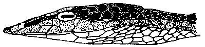
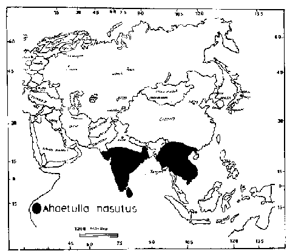

|
Digitized Inventory of Animal Resources: Reptilia ( Snakes ) Principal Investigator: Dr. R. J. B Alfred, Co-Investigator: Dr. Rama Krishna, Contributed by:
Dr. R.C.Sharma |
Ahaetulla nasutus (Lacepede 1789)
Taxonomic
Details
----- Scientific Name
----- Classification
----- Synonyms
----- Common Names
Other
Biological Details
----- Habit and
Habitat
----- Distribution
---------- Extent of
Occurrence
---------- Area of occurrence
---------- Altitude
---------- Population
-----
Conservation Status
-----
Diagnostic
Features
-----
Breeding system
Miscellaneous
Information
Literature
Genus . Ahaetulla Link 1807
bronze backs
This genus comprises very long snakes with compressed body; head is elongated and distinct from the neck; canthus rostralis is quite strong; concave loreals; eyes are quite large, transversely oval, with horizontal pupil; tail is very long; maxilla is with 12-15 teeth, the anterior 6 to 7 gradually enlarged from before backwards or the last suddenly enlarged, followed by a gap, after which the teeth are small, 1 or 2 posterior grooved fangs situated below the posterior border of the eye; ectopterygoid are forked anteriorly, the two branches articulate with the maxilla; nasal shield is elongated, nostril is situated in its posterior portion; frontal shield is narrow, elongate, bell-shaped; body scales are smooth, in 15 : 15 : 13 rows, obliquely arranged, vertebral rows slightly enlarged; ventral shields are some what rounded or with an obtuse lateral keel; posterior dorsal vertebrae are devoid of hypapophysis; subcaudal shields are paired. Hemipenis is short, not forked, its distal end is calyculate, the cups are with scalloped edges; this area merges gradually with a spine bearing area, at the end of which there are few enormous spines proximal to the spines, there are longitudinal folds. Six species of this genus are available from Indian subcontinent, while the range extends in complete Oriental Region, Celebes and Philippine Islands.
Ahaetulla is a genus of arboreal, diurnal snakes, living chiefly on shrubs and bushes. They can move fast; often descent to the ground in search of food; and are ovoviviparous. They feed mainly on lizards, birds, small mammals, frogs and snakes.
Scientific Name : Ahaetulla nasutus (Lacepede 1789)
Family :
Classification: Genus .
Synonyms:
Common Names: common
green whip snake
HABIT & HABITAT This is a most agile, diurnal arboreal species generally found in the dense clusters and branchings of the vegetation. It is at a perfect ease while going from branch to branch and even from a twig to twig and needs slightest support. The snake is most gentle in disposition but on extreme provocation and by rough handling can bite. Its food comprises the lizards, small mammals, birds, small snakes and amphibians. It is said to be drinking (sucking) water (dewdrops from the leaves) by the help of its long beak-like dermal appendage. It is a viviparous species and give birth to the young ones, which may number from 3-22 at a time; breeding season starts in March and extends up to the December.
Distribution: Gujarat : Bharuch, Valsad, Junagarh and Dangs district; Peninsular India, excluding the Ganga valley west to Patna, Bengal.
Conservation status: The species is gradually becoming vulnerable on account of habitat loss and skin trade.
Length : This thin-bodied, laterally compressed snake reaches to a length of 1855 mm. in males and 2660 mm. in females;
Body : head is distinct from the neck; snout is long, acuminate and terminates in a dermal beak shaped appendage, which is quite variable, shorter than the eye; snout bears a median groove above and is formed by the rostral and posesses small scales at the base; length of the snout without the dermal appendage is 2.5 to 3 times that of the eye. hemipenis as given in genric characters.
Scales : Body scales are smooth, in 15 : 15 : 11 rows, vertebral row is larger than other dorsal rows; ventral shields are 166-207, laterally notched; sub-caudal shields are 156-180 in males and 135-152 in females; anal shield is divided;
Colouration : Dorsal colouration is verdant green, the interstitial skin is black and white, forming oblique lines which are most distinct with a white or yellow line is present along the outer margin of the ventrals; in certain individuals lips are yellowish; throat is white; with a faint blue tinge. Many individuals exhibit remarkable colour variations as they may be coloured in yellow, brown or buff dorsally. The belly may be grayish or rosy, some of the rare individuals are coloured profusely with pink.
Breeding Biology :
 
Ahaetulla nasutus (Lacepede) Lateral view of head